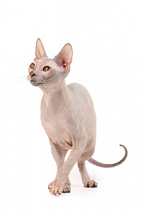
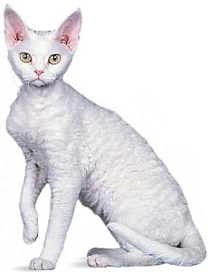
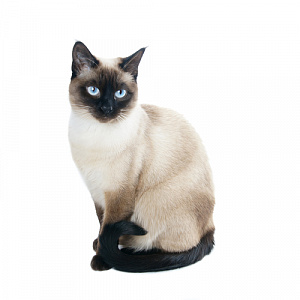

Скоттиш-страйт ( Скоттиш, Шотландская )
Данная порода кошек мало отличается по своим характеристикам от британской короткошерстной кошки, что вызывает горячие споры у заводчиков и владельцев этих плюшевых созданий. Основное отличие породы скотиш-страйт заключается в более пропорциональном, утонченном теле с развитыми мускулами. Они не такие коренастые и массивные как британские короткошерстные кошки. Благодаря более изящному телу они меньше весят, вес взрослого самца скотиш-страйта в среднем на 1 кг меньше своего британского сородича. Также отличается хвост, у шотландца он длиннее с зауженным кончиком и более гибкий. Уши у скотиш-страйта крупнее и уже, чем у британца, при этом ближе посажены друг к другу. Мех у страйта более плотный и мягкий, при этом волоски короткие, к телу не прилегают. Благодаря этому шерсть на ощупь очень приятная и кажется плюшевой. Голова скотиш-страйта овальная небольшая, лоб немного выпуклый, подбородок сильный и хорошо заметный. Нос достаточно широкий и короткий. Щеки и скулы округлой формы. Глаза у скотиш-страйта крупные, в основном ярко-желтые или коричневые, также могут быть зелеными или голубыми, цвет глаз зависит от окраса шерсти животного. Шея широкая и короткая. Уши небольшие.

Бенгальская кошка
Мощное и вытянутое тело с хорошо развитой мускулатурой, костяк крепкий, лапы средней длины. Голова пропорциональная по отношению к туловищу с хорошо развитыми челюстями. Уши довольно короткие с широким основанием, расположены максимально широко. Глаза округлые, яркие и выразительные. Хотя внешний вид бенгальских кошек очень напоминает дикий, отзывы владельцев о характере своих любимцев всегда говорят об обратном. В характере этой породы полностью отсутствует агрессия, агрессивные и пугливые особи исключались из разведения на этапе формирования породы. Бенгалы очень преданные, контактные и дружелюбные кошки. Они общительные и любознательные, хорошо уживаются с другими домашними животными, в меру терпеливы с детьми. Бенгальские кошки активны и очень умны, быстро усваивают то, чему их учит хозяин. Необычайно любят воду, некоторые представители породы даже норовят залезть в ванну к хозяину, когда тот принимает водные процедуры.

Донской сфинкс
Если Вы цените оригинальность и нестандартность во всем - тогда эта порода для Вас. Да, эти донские сфинксы удивительно оригинальны и уникальны, они просто завораживают своим немного космическим видом, ведь подумайте сколько всего необычного эта кошка сочетает в своем облике. Эта уникальная мягкая на ощупь словно замша кожа, эти большие выразительные уши, токая длинная шея, мягкий теплый животик и таинственные глаза. Эти кошки выглядят по-особенному, в них все необычно и непривычно. Все движения обычной кошки, такие как потягивания, умывания, походка на донском сфинксе смотрятся по-другому, у этих кошек совершенно новая иная пластика движений. Несмотря на то, что донские сфинксы – это молодая порода, они приобретают все большую и большую популярность и это неудивительно. Эти кошки сочетают в себе сплошь положительные качества.
Немецкий рекс ( Прусский рекс, герман-рекс )
Утвержден набор качеств и характеристик породы которому кошки - немецкие рексы должны соответствовать: голова имеет круглую форму, морда выдается вперед, имеет ярко обозначенные черты. Широко расставлены уши, которые имеют одинаковую ширину по всей длине, отличаются малой подвижностью в сравнении с другими кошками. Это некрупные кошки, вес в среднем 4 кг. Хорошо развита мускулатура, телосложение плотное. Лапы средней длины при этом задние немного длиннее передних, поэтому при ходьбе круп кошки приподнят. Глаза, тоже широко расставленные, имеют разные варианты окраса, но цвет глаз должен быть чистым и однотонным, без примесей, глубоким. Часто встречается голубой, желтый и миндальный цвета глаз. Шерсть имеет приятные завитки, которые особенно видны на спине, мех мягкий, нежный, приятный на ощупь. Окрас шерсти тоже имеет массу вариантов.
Тайская кошка
Внешние черты и характеристики тайской кошки: это сильные животные, компактных размеров, форма головы круглая, уши маленькие, близко посажены друг ко другу. Глаза раскосые миндалевидные или лимоновидные, имеют великолепный голубой цвет. Окрас шерсти у тайской кошки колор-поинт, который подразумевает наличие маски на морде, темные лапы и темный хвост. Туловище имеет светлый окрас, причем интенсивность светлого меняется с возрастом, если у котят он белый, то у взрослых особей сменяется на кремовый, цвет слоновой кости или темно-каштановый. Цвет лап не обязательно должен быть темным, коричневым или черным, допустимы лиловый, голубой, серый или карамельный. При этом цвет может быть не сплошным, а расходиться на полосы, такой окрас называется тэбби. Лапы элегантные, с аккуратными подушечками.
| № | Страна | Количество |
|---|---|---|
| 1 | США | 76,5 миллионов кошек |
| 2 | Китай | 53 миллиона кошек |
| 3 | Россия | 12,5 миллионов кошек |
| 4 | Бразилия | 12,5 миллионов кошек |
| 5 | Франция | 9,5 миллионов кошек |
| 6 | Италия | 9,5 миллионов кошек |
| 7 | Великобритания | 7,75 миллионов кошек |
| 8 | Германия | 7,75 миллионов кошек |
| 9 | Украина | 7,5 миллионов кошек |
| 10 | Япония | 7,25 миллионов кошек |